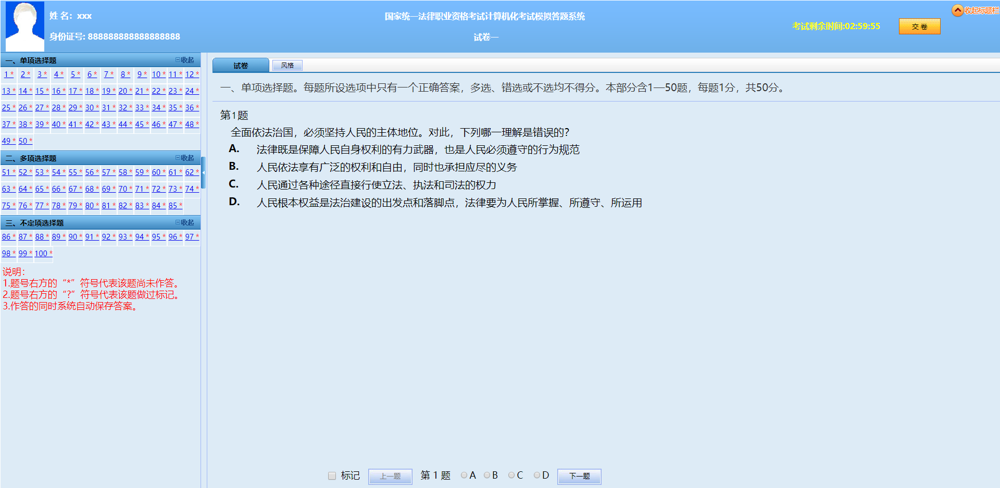
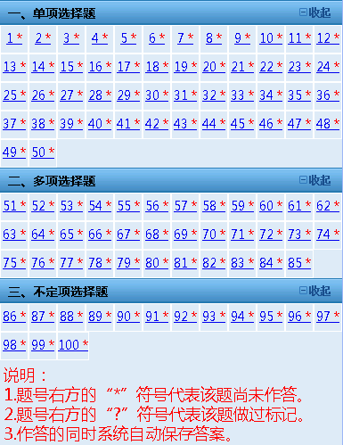
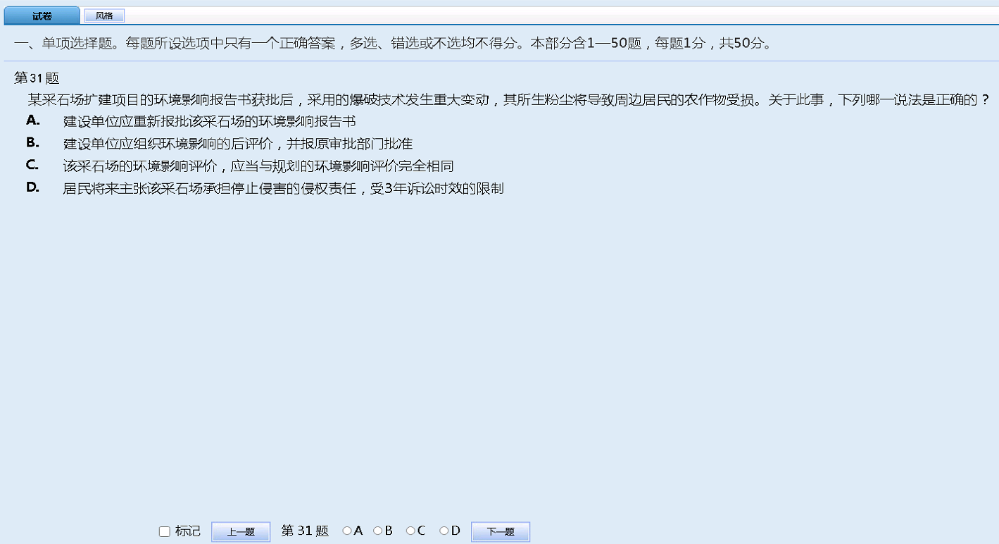
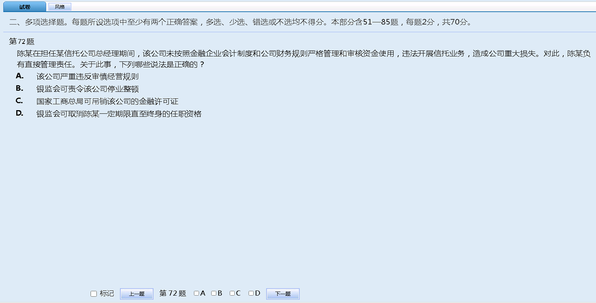
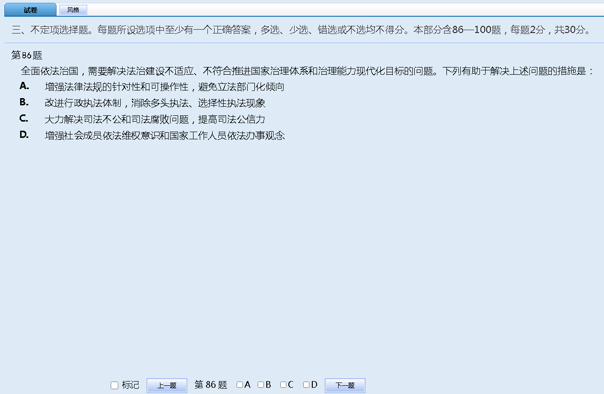

国家统一法律职业资格考试计算机化考试应试人员操作说明
一. 系统登录
进入答题系统后，请根据提示输入准考证号和身份证号，点击”登录”按钮进入系统等待界面。
二. 系统等待界面
系统等待界面是考试前的一个提示界面，登录后请认真核对屏幕左上方的基本信息。利用考前等待时间认真阅读考试重要提示（包括应试人员须知和操作说明）。点击“应试人员须知”按钮，进入应试人员须知具体说明；点击“操作说明”按钮，进入操作步骤具体说明；点击照片，可以获取最新签到照片。考试开始后，系统将自动进入应试人员答题界面。
三. 答题界面
答题界面上方为标题栏，下方为试题区。
(一) 标题栏
标题栏中间位置为本场考试科目名称，左侧为应试人员基本信息，包括姓名、身份证号、签到照片，点击签到照片可以获取更多的应试人员信息和最新的签到照片。右侧为本场考试科目剩余时间信息和收起标题栏按钮。

(二) 题号列表区

题号“*”表示该小题未作答，无“*”表示该小题已作答，“？”表示该小题被标记。应试人员可以通过题号列表查看本考试科目全套试卷的作答情况（包括每道试题的已答或未答状态），还可点击各题号按钮，直接进入各试题进行答题或检查。
(三) 试题区域
1. 单项选择题
单项选择题答题时，应试人员直接点击备选项中认为正确的选项前的按钮即可。如需修改答案，点击其他备选项前的按钮，原选择的选项将被自动替换。如需撤销已经选中的选项，再次点击该选项前的按钮即可。

2. 多项选择题
多项选择题答题时，应试人员直接用鼠标点击备选项中认为正确的所有选项前的按钮即可。如需撤销已经选中的选项，再次点击该选项前的按钮即可。

3. 不定项选择题
不定项选择题答题时，应试人员直接用鼠标点击备选项中认为正确的所有选项前的按钮即可。如需撤销已经选中的选项，再次点击该选项前的按钮即可。

四. 结束考试
(一) 提前交卷
如应试人员决定结束本考试科目作答，可以点击屏幕上方的”交卷”按钮结束本考试科目答题。
1. 如所有题目均未作答，系统将提示本考试科目尚未作答，要求应试人员返回继续作答。
2. 如应试人员有部分题目未作答，系统将提示本考试科目未作答题目数量，应试人员可返回作答或确认交卷。
3. 应试人员如连续两次确认交卷，将不能再返回本考试科目继续作答。应试人员在提前交卷前，请务必仔细检查答题完成情况。确认无误后，点击”确定交卷”按钮结束本考试科目答题，提交本考试科目答题结果。
4. 应试人员在交卷后，应立即离开考场，不得在考场附近逗留、谈论和喧哗。
(二) 整场考试结束
考试时间结束仍未交卷的，系统将自动提交；考试时间内因发生异常需要补时的,系统在补足考试时间后自动提交。
五. 其他功能介绍
系统显示本考试科目剩余时间，目的是提示应试人员合理控制答题进度。在每科目剩余15分钟时，系统会弹出窗口提示应试人员；应试人员点击”返回作答”按钮，窗口会立即消失；如不点击，会在10秒后自动消失。
本模拟答题系统旨在让应试人员熟悉计算机化考试环境和作答方式，考试题型、题量、分值、界面及文字内容以正式考试答题系统为准。